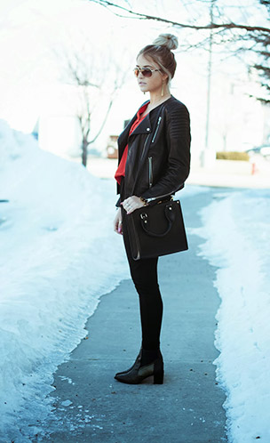
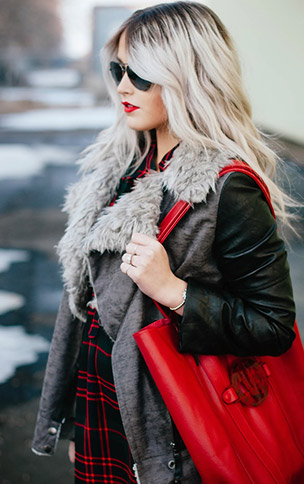

Cara Loren
Hello you lovely followers, let me tell you a little bit about my life.I am Cara Loren Van Brocklin and I am 23.
Makeup | Beauty | Fashion Looks
I thought why not begin by bringing in some inspirational makeup looks from Spring 2014 NYFW that I love. One of my favorite looks was from the Rebecca Minkoff show......I died over the natural yet fun look that popped. It had a little bronze to it which I love and a fun pop of blush to make the look stand out. I think this is a look that I could wear everyday and never get sick of it. I decided to use the TEMPTU system today....you will see it all in the tutorial! The airbrush keeps it's very fresh and young and that's exactly what this look needs. Make sure you watch the video to get all the details!
I have been really into harem pants again lately. I love that they are super comfy but give you that cool aspect as well. These ultra low ones are exactly what I have been looking for. Oh and once I saw these booties were on sale I had to pull the trigger. They are the perfect pointed toe bootie that will go with anything. I am always eyeing down Tibi boots and don't regret this sale snag at all.
 Where to find my items in stores |
- Top: c/o Infinite Chic
- Jacket: hm similar
- Pants: c/o Windsor
- Shoes: Tibi (on sale)
- Bag: Steve Madden via c/o LuLu*s
- Watch: Movado via c/o Jeweler's Wife
- Sunnies: Vince Camuto